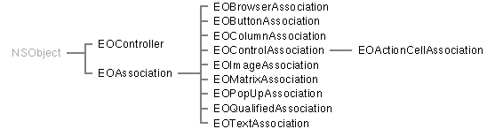

Enterprise Objects Framework Release 1.1 Copyright ©1995 by NeXT Computer, Inc. All Rights Reserved.
| 2 |
The Interface Layer
| Library: | libEOInterface_s.a | |
| Header File Directory: | /NextDeveloper/Headers/eointerface |
| Introduction |
| The interface layer of the Enterprise Objects Framework defines classes and protocols that allow your application to interact with any source of enterprise objects and control the values of their properties through the user interface. For the purposes of the interface layer, an enterprise object is any object that implements the EOKeyValueCoding informal protocol as described in Chapter 1, "The Access Layer."
The interface layer works with a model-view-controller paradigm, in which an application's data (model) is kept separate from the user interface (view) by an intermediate layer (controller). Your application's enterprise objects are the model. The classes of the Enterprise Objects Framework interface layer compose the controller system for your application. This introduction lists the individual classes and protocols of the interface layer, suggesting entry points into the reference material. All of the reference material for the Enterprise Objects Framework assumes that you're familiar with the Foundation Kit and with the concepts described in the Enterprise Objects Framework Developer's Guide.
Classes and Protocols Figure 2 illustrates the classes in the interface layer proper. Though not illustrated here, the interface layer also includes a few user interface object classes--NXTableView, NXImageView, and their related classes and protocols--that add to those provided by the Application Kit. See Chapter 3, "User Interface Objects," for information on these classes. Note: The user interface object classes are essentially the ones provided in the Database Kit. The Enterprise Objects Framework versions of these classes use an NX prefix to distinguish them; they're otherwise nearly identical to their Database Kit counterparts. |
|  |
| Figure 2. The Interface Layer Inheritance Hierarchy
The central class of the interface layer is EOController, which assumes primary responsibility for synchronizing the data in your application's enterprise objects with its user interface. It does so by using EOAssociation objects to associate properties of the enterprise objects with user interface objects. An association monitors a user interface object, informing the controller when the user interface is edited so that the enterprise object's property can be changed, and updating the user interface object when the controller tells it about a change in value. EOAssociation has several subclasses specific to classes of user interface object: EOControlAssociation is used for most subclasses of Control, while EOBrowserAssociation is used with NXBrowser objects, and so on. As you can see from Figure 2, the inheritance relationships of user interface classes have little to do with the inheritance relationships of their association subclasses. All EOAssociation classes implement the EOAssociationNotification protocol, which declares methods sent by an EOController to notify associations of changes to the objects whose values they display. Another protocol related to EOAssociations is EOAssociationClasses. This informal protocol, or category, declares a single method that user interface classes can implement to offer a subclass of EOAssociation to be used with them. PopUpList, for example, implements this method to return the EOPopUpAssociation class object. Finally, enterprise objects working at the interface layer can implement the EOObjectValidation protocol. This protocol allows an enterprise object to be notified when it's about to be saved out to the external data store used by the controller (for example, a database). |